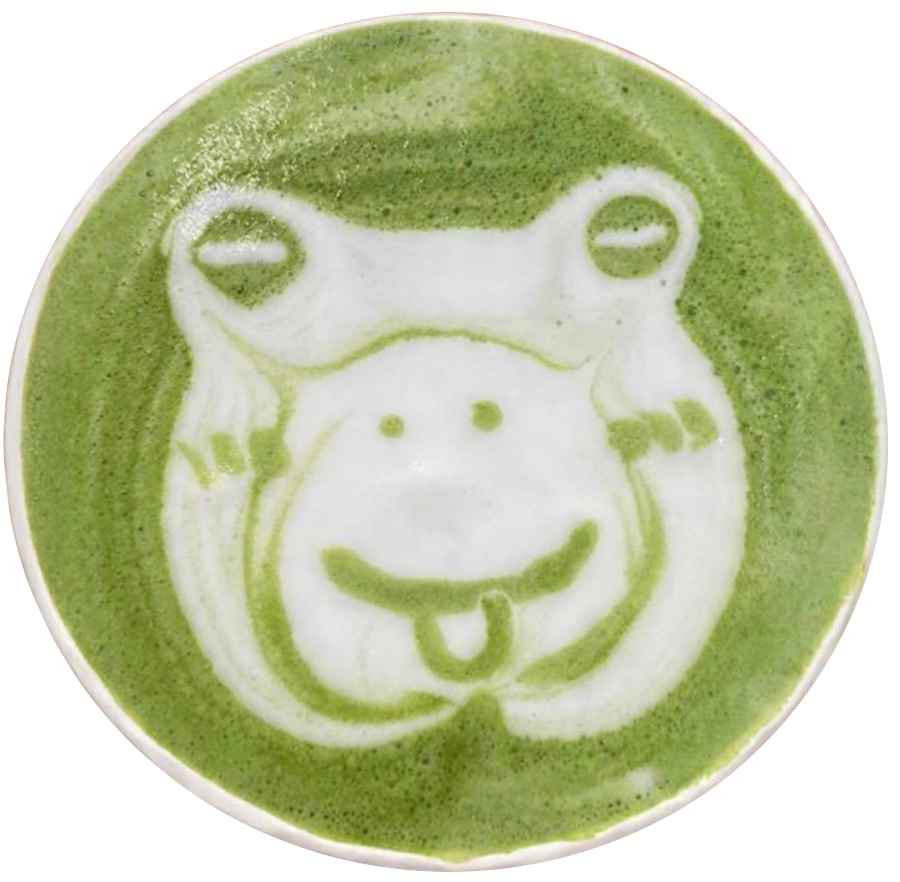
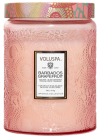
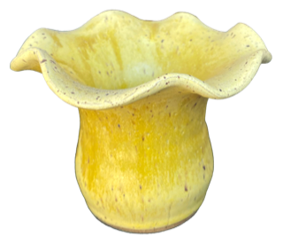
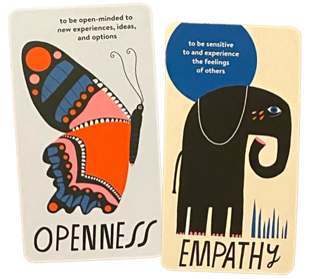
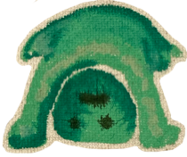
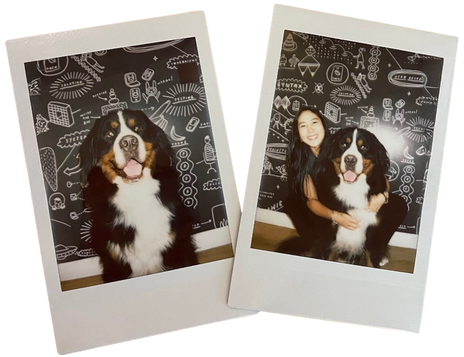

These are a few of my favorite things!









I spent a decade in branding and visual communications before curiosity pulled me toward the bigger picture: how people move through spaces, make decisions, and connect with the world around them. That curiosity led me to SVA, where I'm pursuing an MFA in Interaction Design and learning to ask better questions. I care about design that feels human, and I try to bring that same energy to how I work and collaborate.
Outside of that, I have a Bernese Mountain Dog named Gus. We have an ongoing quest for the perfect pastry — he waits outside, I do the research. When I need to decompress, you'll find me watching Somebody Feed Phil, because food and genuine human kindness never get old.
These are a few of my favorite things!




